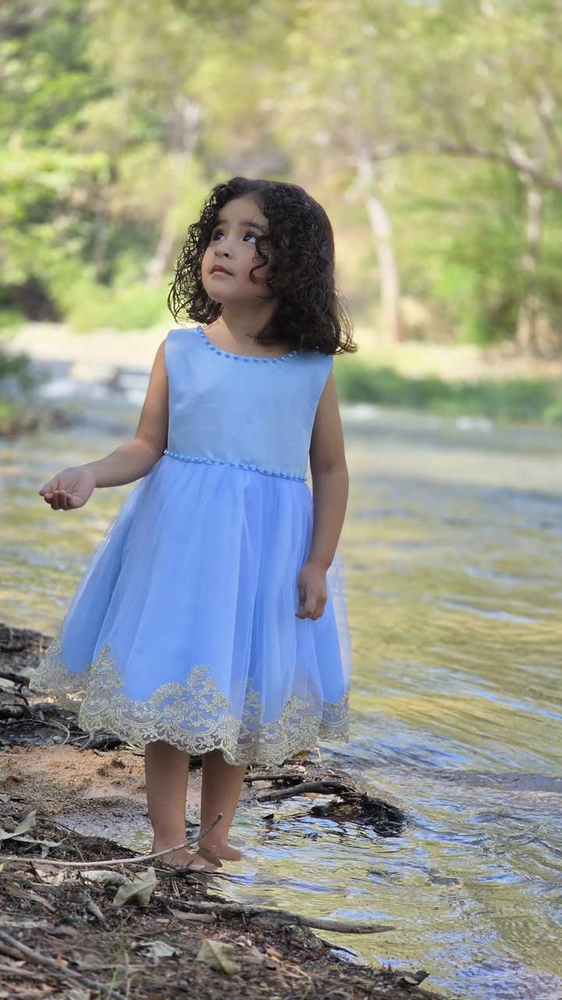

El matrimonio es una promesa de amor, constancia y fidelidad, que se renueva todos los días de su vida. Para que el matrimonio dure, hay que enamorarse todos los días. Muchas, muchas veces y siempre de la misma persona.
Nuestra Boda
Johan y Paola
Falta para nuestro gran día
00
Días
00
Horas
00
Minutos
00
Segundos
Sábado 30 de Mayo
Invitarlos a ser parte de este día tan especial para nosotros
Nuestros Padres
Novio
Prof. Neftali Serrano Albores
Sra. Maria Teresa Montejo Espinosa
Novia
Sr. Inocente Pérez Toalá
Sra. Maria Celia Pérez Toalá
Nuestros Padrinos
Arras
Sr. Oscar Andres Pérez Toalá
Sra. Guadalupe Nango Pérez
Lazo
Sr. Adelin Pérez Toalá
Sra. Olga Lidia Escobar Pérez

Anillos
Sr. Huberto Pérez Hernández
Lic. Dalia Guadalupe Díaz López
Velación
Sr. Vicente Pérez Toalá
Sra. María del Rosario Pérez Gómez
Y así mismo al bautizo de nuestra hija

Paulette Serrano Pérez
Padrinos de Bautizo
Padrinos
Joven Osmar Daniel Pérez Pérez
Padrinos de Evangelio
Sra. Marily Pérez Pérez
Ing. Jonathan Pérez Pozo
Lic. Maria Fernanda Pérez Escobar
Sr. Jonathan Cundapi Gallegos
Joven Marco Antonio Dominguez Pérez
Ing. Osvaldo Vergara Montejo
Sra. Karla Janeth Júarez Torres
Ceremonia Religiosa
Iglesia: San Francisco de Asís
Hora: 01:00 pm
Dirección: Calle Primera Pte. Sur, San Francisco, Tuxtla Gutiérrez, Chis.
Recepción y Fiesta
Salón: Quinta "Violeta"
Hora: 04:30 pm
Dirección: Entre 1ª Sur Oriente y Av. Central
Johan & Paola